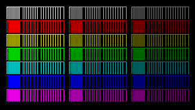

If you’ve found this intentionally, I don’t have to explain why you want this infomation, so just skip down to the code snippet area. For everyone else, I’m sure you probably want to know, “Why?” - Let me direct your attention here: http://www.avsforum.com/forum/166-lcd-flat-panel-displays/1381724-official-4-4-4-chroma-subsampling-thread.html
4:4:4 Chroma is something that we tend to take for granted with computer oriented displays, but something that is often a pain to enable on a panel marketed as a TV. Basically it means that all of the color information is being passed through to the display panel without being compressed. A technical explanation is best found at the above link.

There’s a “bug” or “feature” in some VIZIO TV’s where if you push the pixel clock past a certain normal level, it causes the TV’s firmware to put it into a custom resolution mode. You can tell this because when you press the “guide” button on the TV remote, you will see a custom resolution that looks more like something you see on a comptuer, instead of the familiar “1080p”, “720p” etc.
Example:
First, test to see if your mode works for you. After executing the following commands,
the screen should blank and assume the new refresh rate after the --output command.
This is “61Hz” for a 50” D500i:
xrandr --newmode "1920x1080_61" 151 1920 2008 2052 2200 1080 1084 1089 1125 +Hsync +Vsync
xrandr --addmode HDMI-1 "1920x1080_61"
xrandr --output HDMI-1 --mode "1920x1080_61"
At first I had some difficulty getting this mode to be accepted by Xorg, mostly due to my own ignorance on configuring the server (how pampered we’ve been with automatically configured X!). The key was to realize that the traditional way of simply putting a modeline into the “Monitor” section and then calling it in the “Display” section under screen wasn’t going to cut it.
What we need to do is make sure that we have the necessary ModeLine present
under the “Monitor” section, set Option "PreferredMode" "1920x1080_61" which
takes precedence over any EDID information. Then, we link our monitor (Monitor0)
# Custom X11 config for VIZIO TV to force 4:4:4 chroma by
# tricking the pixel clock into turing the tv pre-processor off
Section "Monitor"
Identifier "Monitor0"
Option "DPMS"
ModeLine "1920x1080_61" 151 1920 2008 2052 2200 1080 1084 1089 1125 +Hsync +Vsync
Option "PreferredMode" "1920x1080_61"
EndSection
Section "Device"
Identifier "Device0"
Driver "nouveau"
Option "Monitor-HDMI-1" "Monitor0"
EndSection
You should now be able to start your favorite DE and set the mode/refresh manually if it hasn’t already done so.